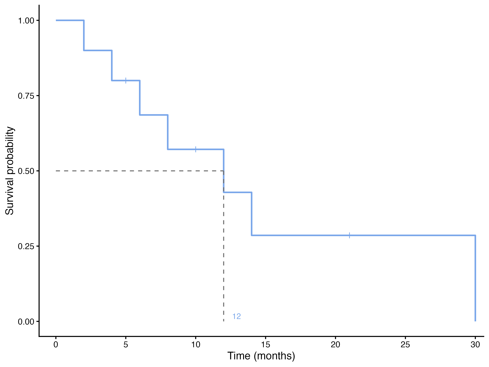

| Month | At risk | Deaths | Censored | 1 − d/n | S(t) | 95% CI |
|---|---|---|---|---|---|---|
| 2 | 10 | 1 | 0 | 9/10 = 0.900 | 0.900 | 0.732–1.000 |
| 4 | 9 | 1 | 0 | 8/9 = 0.889 | 0.800 | 0.587–1.000 |
| 5 | 8 | 0 | 1 | 0.800 | 0.587–1.000 | |
| 6 | 7 | 1 | 0 | 6/7 = 0.857 | 0.686 | 0.445–1.000 |
| 8 | 6 | 1 | 0 | 5/6 = 0.833 | 0.571 | 0.326–1.000 |
| 10 | 5 | 0 | 1 | 0.571 | 0.326–1.000 | |
| 12 | 4 | 1 | 0 | 3/4 = 0.750 | 0.429 | 0.193–0.951 |
| 14 | 3 | 1 | 0 | 2/3 = 0.667 | 0.286 | 0.092–0.884 |
| 21 | 2 | 0 | 1 | 0.286 | 0.092–0.884 | |
| 30 | 1 | 1 | 0 | 0/1 = 0.000 | 0.000 |
Kaplan-Meier: estimating the survival curve
The product-limit estimator by hand, its confidence interval, median survival and survival at fixed times.
The idea: survive one step at a time
The probability of surviving two years is the probability of surviving the first year, times the probability of surviving the second year given that you survived the first. The Kaplan-Meier estimator (Kaplan and Meier 1958) applies this idea at every time an event happens. At each event time \(t_j\) it looks only at the \(n_j\) patients still at risk (alive and under observation just before \(t_j\)), counts the \(d_j\) events, and estimates the chance of getting through that moment as \(1 - d_j/n_j\). The survival curve is the product of these factors:
\[\widehat S(t) = \prod_{t_j \le t} \left(1 - \frac{d_j}{n_j}\right)\]
Censored patients never contribute a factor. They count in the number at risk up to their censoring time and then leave the risk set. This is how the method uses each patient for exactly as long as they were observed.
By hand: ten patients
Here are ten patients, times in months, a + marking a censored time:
2, 4, 5+, 6, 8, 10+, 12, 14, 21+, 30
Follow the rows. At month 2 all 10 patients are at risk and one dies: \(\widehat S = 9/10 = 0.9\). At month 4, 9 are at risk and one dies: \(\widehat S = 0.9 \times 8/9 = 0.8\). The patient censored at month 5 does not change the curve, but from then on only 7 patients are at risk, so the death at month 6 multiplies the curve by \(6/7\), not by \(7/8\). And so on, until the last patient dies at month 30 and the curve reaches 0.
Notice what the naive calculation would say: 7 of the 10 patients died, so “30% survival”. But the three censored patients were followed for 5, 10 and 21 months only. The Kaplan-Meier estimate of survival at 21 months is 0.286, and it is 0 after the last death at month 30, because the one patient still at risk then died.
This is what the module draws for these ten patients:

NoteDeaths and censoring at the same time
When a death and a censoring happen at the same recorded time, the convention is that the death came first: the censored patient is still counted at risk at that time. With several deaths at one time, \(d_j\) is simply larger than 1.
How precise is the curve?
Each factor \(1 - d_j/n_j\) is estimated from the patients at risk at that moment, so the curve becomes less precise as that number shrinks. Greenwood’s formula (Greenwood 1926) gives the variance of \(\log \widehat S(t)\) by adding up a contribution from each event time:
\[\widehat{\operatorname{var}}\bigl[\log \widehat S(t)\bigr] = \sum_{t_j \le t} \frac{d_j}{n_j\,(n_j - d_j)}\]
The module (through the R survival package) builds the 95% confidence interval on the log scale and transforms it back:
\[\widehat S(t)\,\exp\Bigl(\pm 1.96\,\sqrt{\widehat{\operatorname{var}}\bigl[\log \widehat S(t)\bigr]}\Bigr)\]
with an upper limit above 1 cut to 1. The interval is asymmetric and widens quickly when few patients remain at risk, as in the last rows of Table 1. On a plot, the confidence band (option Confidence bands) shows where the curve is still informative. At the right end of a curve, where only a handful of patients are at risk, the steps are large and the band is wide: do not read much into the tail of a Kaplan-Meier curve.
Median survival
The median survival is the first time at which \(\widehat S(t)\) drops to 0.5 or below. It is preferred to the mean because survival times are skewed and the mean cannot be estimated when the curve does not reach 0. Its 95% CI comes from the confidence band: it runs from the time the lower limit of the band crosses 0.5 to the time the upper limit does (Brookmeyer and Crowley 1982). An upper limit can be missing when the band never gets down to 0.5: for the ten patients the median is 12 months, and its 95% CI runs from 6 months to not reached, because the upper limit of the band never falls to 0.5 (Table 1).
If fewer than half of the patients have had the event by the end of follow-up, the median is not reached, and the module leaves the cell empty. That is information, not a failure: report survival at fixed times instead.
Survival at fixed times
“One-year survival 41 %” is \(\widehat S(12)\), read off the curve at 12 months. In the module, type the times in Survival at times (for example 6, 12, 24) and the table gives, for each group and time, the number still at risk, the cumulative number of events, \(\widehat S(t)\) and its CI. These are the numbers clinicians quote, and they need no assumption about the shape of the curve.
A time beyond the last follow-up of a group has 0 patients at risk. The curve is then carried forward from the last observed value, and the module adds a note to the table; those rows are not estimates.
Four views of the same curve
The Kaplan-Meier module can draw the estimate in four ways (section Plots):
| Plot | Shows | Use it to … |
|---|---|---|
| Survival curve | \(\widehat S(t)\) | show survival; the standard figure |
| Cumulative incidence (1 − S) | \(1 - \widehat S(t)\) | show how the proportion with the event grows (for relapse, infection …) |
| Cumulative hazard | \(\widehat H(t) = -\log \widehat S(t)\) | see how the hazard changes: a straight line means a constant hazard |
| Log-log (PH check) | \(\log(-\log \widehat S(t))\) against log time | check the proportional-hazards assumption of Cox regression: the curves of two groups should be parallel |
The KM worked example shows all four for the ECOG groups.
WarningCompeting risks
\(1 - \widehat S(t)\) is the probability of the event by time \(t\) only if every patient would eventually have it. For death from any cause that is true. For an event such as death from cancer, patients who die of something else are not “censored” in the usual sense: they can no longer have the event. Treating them as censored overestimates the cumulative incidence; this needs competing-risks methods (Austin et al. 2016), which this module does not provide.
Reading any Kaplan-Meier plot critically
- Check the number at risk under the plot (Pocock et al. 2002; Morris et al. 2019). Differences at the right end, with few patients left, are unreliable.
- Look at the whole curve, not only the median. Two groups can have the same median and very different early or late survival.
- Ask how long patients were followed, and whether losses to follow-up could be informative (see Censoring).
- Check the axes. The y-axis should go from 0 to 1 (or 0 to 100%); a truncated axis exaggerates differences.
References
Austin, Peter C., Douglas S. Lee, and Jason P. Fine. 2016. “Introduction to the Analysis of Survival Data in the Presence of Competing Risks.” Circulation 133 (6): 601–9. https://doi.org/10.1161/CIRCULATIONAHA.115.017719.
Brookmeyer, Ron, and John Crowley. 1982. “A Confidence Interval for the Median Survival Time.” Biometrics 38 (1): 29–41. https://doi.org/10.2307/2530286.
Greenwood, Major. 1926. “The Natural Duration of Cancer.” Reports on Public Health and Medical Subjects 33: 1–26.
Kaplan, E. L., and Paul Meier. 1958. “Nonparametric Estimation from Incomplete Observations.” Journal of the American Statistical Association 53 (282): 457–81. https://doi.org/10.1080/01621459.1958.10501452.
Morris, Tim P., Christopher I. Jarvis, William Cragg, Patrick P. J. Phillips, Babak Choodari-Oskooei, and Matthew R. Sydes. 2019. “Proposals on Kaplan-Meier Plots in Medical Research and a Survey of Stakeholder Views: KMunicate.” BMJ Open 9 (9): e030215. https://doi.org/10.1136/bmjopen-2019-030215.
Pocock, Stuart J., Tim C. Clayton, and Douglas G. Altman. 2002. “Survival Plots of Time-to-Event Outcomes in Clinical Trials: Good Practice and Pitfalls.” The Lancet 359 (9318): 1686–89. https://doi.org/10.1016/S0140-6736(02)08594-X.